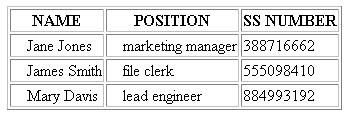

|
| ||
|
| ||
Charles Heinemann
Program Manager, XML
Microsoft Corporation
November 4, 1998
The following article was originally published in the Site Builder Network Magazine "Extreme XML" column (now MSDN Online Voices Extreme XML).
 Download the source code for this article (zipped, 3.3K)
Download the source code for this article (zipped, 3.3K)
Before I get to how Internet Explorer 5 supports XML Schema, XSL, the C++ XMLDSO, and other stuff, I'll take one question from the floor:
Recent e-mail to Charles: "Look, I'm a professional, adult, developer. Not an 8 year-old. Please write your articles as such. All this waffle (sic) grates and gets in the way of the content."
- Anonymous Extreme XML Reader.
Official Response: Indeed, in my last Extreme XML column, I did write material that was not appropriate for professional, adult developers. In fact, it was wrong. It constituted a critical lapse in judgment and a personal failure on my part for which I am solely and completely responsible.
But, as I told my editor today, and as I say to you now, at no time did I ask anyone to act like an 8-year old or a professional, to hide or destroy evidence to the contrary, or to take action as if they were an 8-year old professional.
I know that my public comments and my silence about this matter gave a false impression. I misled people, including even my wife. I deeply regret that.
The XML community has been distracted by this matter for too long, and I take my responsibility for my part in all of this. That is all I can do. Now it is time -- in fact, it is past time -- to move on.
We have important work to do -- real opportunities to seize, real problems to solve, real security matters to face.
So, with my conscience cleared, here goes: what's new with XML in the Microsoft Internet Explorer 5. (That link is your cue to go download the beta release, by the way.)
The following XML file contains professional information about professionals:
<employees>
<employee>
<name>James Smith</name>
<birthdate>1970-09-30</birthdate>
<ss_number>555-09-8410</ss_number>
<position>file clerk</position>
</employee>
<employee>
<name>Jane Jones</name>
<birthdate>1968-03-22</birthdate>
<ss_number>388-71-6662</ss_number>
<position>marketing manager</position>
</employee>
<employee>
<name>Mary Davis</name>
<birthdate>1972-11-09</birthdate>
<ss_number>884-99-3192</ss_number>
<position>lead engineer</position>
</employee>
</employees>
Internet Explorer 5 supports a technical preview release of XML schema. The XML schema support is a subset of the Worldwide Web Consortium (W3C) XML Data submission and is functionally very close to the W3C DCD submission. With the new XML Schema support in Internet Explorer 5, we can validate the above file against a schema by declaring the following namespace on the root element:
<employees xmlns="x-schema:employeeSchema.xml">
This sets the schema "employeeSchema.xml" as the default namespace for the document. Other namespaces can be declared throughout the document if desired, but, where no namespace is specified, the default one will apply.
Now let's take a look at the complete schema for the above XML document:
<Schema xmlns="urn:schemas-microsoft-com:xml-data"
xmlns:dt="urn:schemas-microsoft-com:datatypes">
<ElementType name="name" content="textOnly"/>
<ElementType name="birthdate"
content="textOnly"
dt:type="date"/>
<ElementType name="ss_number"
content="textOnly"
dt:type="ui8"/>
<ElementType name="position" content="textOnly"/>
<ElementType name="employee" content="eltOnly">
<element type="name"/>
<element type="birthdate"/>
<element type="ss_number"/>
<element type="position"/>
</ElementType>
<ElementType name="employees"
content="eltOnly"
order="many">
<element type="employee"/>
</ElementType>
</Schema>
The attribute
xmlns='urn:schemas-microsoft-com:xml-data'
sets the default namespace for the XML document as the Schema namespace. This means that the schema must conform to the syntax for XML Schemas. Similarly, the attribute
xmlns:dt='urn:schemas-microsoft-com:datatypes'
declares the data type namespace. This means that data types can now be declared throughout the schema. (You'll notice that I use the "dt" prefix on the "type" attribute to type the value of the "birthdate" and "ss_number" elements.
The names of the data types have changed somewhat from the Internet Explorer 5 Developer Preview Release, so be sure to look at the data-type documentation on the Website before using data types.
The MSXML parser within the new beta release has full DOM support in compliance with the W3C DOM recommendation . In addition, it also has the Microsoft extensions that allow you to access typed data and namespace information, create nodes by node type, etc. Below is a script that loads the XML document containing the employee information and uses XSL Pattern Matching to display the birthdate of the employee with the name of "Mary Davis":
. In addition, it also has the Microsoft extensions that allow you to access typed data and namespace information, create nodes by node type, etc. Below is a script that loads the XML document containing the employee information and uses XSL Pattern Matching to display the birthdate of the employee with the name of "Mary Davis":
function showBirthdate()
{
var root = employeeDoc.documentElement;
var selectedElems =
root.selectNodes("employee[name='Mary Davis']");
var maryElem = selectedElems.item(0);
var birthdate =
maryElem.childNodes.item(1).nodeTypedValue;
alert("Mary Davis was born " + birthdate);
}
You'll notice that in the above function that documentElement is used to get the root. This replaces the documentNode property from the Developer Preview release of Internet Explorer 5. You'll also notice the addition of the selectNodes method. This method allows you to use XSL pattern-matching to retrieve a nodelist. In this case, you are looking for all "employee" elements that have a "name" element with the value of "Mary Davis." Because there is only one element that matches this pattern, selectNodes returns a nodelist of length one.
At this point, I'd like to show you the data island that loads the XML file processed by the above function:
<XML ID="xmldoc" src="employees.xml"
onreadystatechange="getState()">
</XML>
Everything here should look familiar, except the onreadystatechange event. The MSXML parser that ships with Internet Explorer 5 supports two notifications on the XML document object: ondataavailable and onreadystatechange. I use the latter notification on this data island to ensure that the XML document "employees.xml" has been completely loaded and parsed before I begin processing it. I do so by checking the readyState property in my event handler:
function getState()
{
if (employeeDoc.readyState == 4)
showBirthdate();
}
Displaying Mary's birthdate in an alert box might be all that is necessary. If you are interested in more complex formatting, however, it might be a better idea to use the new XSL support. For instance, let's say you wanted to display each employee's information in a simple table. We could first create an XSL style sheet:
<?xml version="1.0"?>
<! -- employeeSS.xsl -->
<DIV xmlns:xsl="http://www.w3.org/TR/WD-xsl">
<TABLE BORDER="1">
<THEAD><TH>NAME</TH>
<TH>POSITION</TH>
<TH>SS NUMBER</TH>
</THEAD>
<xsl:for-each select="employees/employee"
order-by="+ ss_number">
<TR>
<TD STYLE="padding-left:1em">
<SPAN>
<xsl:value-of select="name"/>
</SPAN>
</TD>
<TD STYLE="padding-left:1em">
<SPAN>
<xsl:value-of select="position"/>
</SPAN>
</TD>
<TD>
<SPAN>
<xsl:value-of select="ss_number"/>
</SPAN>
</TD>
</TR>
</xsl:for-each>
</TABLE>
</DIV>
This style sheet declares the XSL namespace
xmlns:xsl='http://www.w3.org/TR/WD-xsl'
and then begins to describe the desired output. This particular style sheet creates a table and uses the values of selected XML elements to fill the table with information. The style sheet also sorts the information by Social Security number (using the order-by attribute on the xsl:for-each element). You'll notice that the order in which the employee information is displayed differs from the original XML document.
The big question now: "How do I apply this style sheet to the XML document?" This can now be done through the XML OM. The transformNode method on IXMLDOMNode allows you to pass in an XSL tree and use that tree to transform an XML node into an output string. In the case below, that string will be an HTML string that I will then insert into a DIV element with the id value of "results":
function showBirthdate()
{
results.innerHTML = employeeDoc.transformNode
(employeeSS.documentElement);
}
The above script displays the following in the browser:

In addition to XSL, you can also use the new C++ XMLDSO to display the employee information. This method can be particularly appropriate if you are not too familiar with scripting. With the new XMLDSO, you can bind directly to a data island and display XML in a completely declarative fashion. The following HTML is all that is needed to create a table with the employee information displayed in it:
<HTML>
<BODY>
<XML ID="employeeDoc" src="employees.xml"></xml>
<TABLE BORDER=1 DATAsrc="#employeedoc">
<THEAD><TH>NAME</TH>
<TH>POSITION</TH>
<TH>SS NUMBER</TH>
</THEAD>
<TBODY>
<TR>
<TD><SPAN DATAFLD="name"></SPAN></TD>
<TD><SPAN DATAFLD="position"></SPAN></TD>
<TD><SPAN DATAFLD="ss_number"></SPAN></TD>
</TR>
</TBODY>
</TABLE>
</BODY>
</HTML>
With the XMLDSO you aren't able to filter and sort as with XSL. Consequently, your information will appear in a different order than if you used this style sheet. You are, however, able to display XML without script and can take advantage of all the regular data binding features.
It is now also possible to view the XML file by simply typing the URL of the XML file in the IE address box. The XML file can be displayed using the default style sheet or it can be displayed using a designated style sheet. If you place the following processing instruction at the beginning of the "employees.xml" file
<?xml:stylesheet type="text/xsl"
href="employeetable.xsl" ?>
the XML will be displayed within the browser just as it is when we use transformNode above.
For other information on the new XML support available with the Microsoft Internet Explorer 5, check out Microsoft's official XML site. There you'll find more detailed information on the features described above. You will also find relevant documentation and other samples.
But seriously, this is cool stuff. I showed this to my Uncle Edd and he was simply flabbergasted. After the shock subsided, though, he did have one suggestion. "Loosen up, son."
Charles Heinemann is a program manager for Microsoft's Weblications team. Coming from Texas, he knows how to think big.
Did you find this material useful? Gripes? Compliments? Suggestions for other articles? Write us!
© 1999 Microsoft Corporation. All rights reserved. Terms of use.